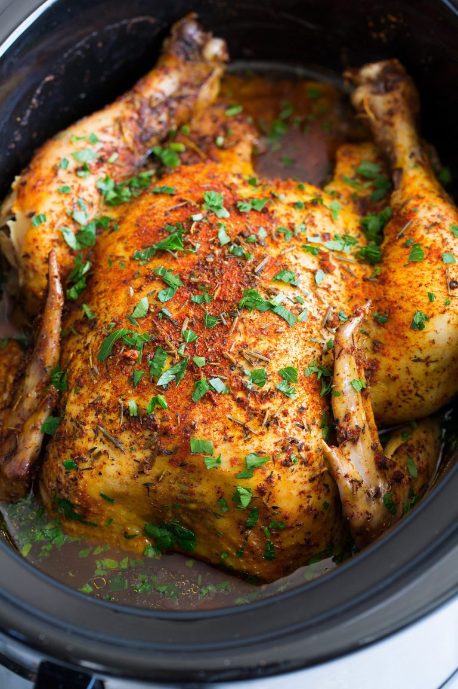

Slow Cooked Chicken

Description
In the past I’ve mostly just cooked chicken breasts or thighs in the slow cooker but now I’m totally loving the idea of just throwing in a whole chicken in - bones, skin and all.
It adds so much flavor and I love that it makes a lot of servings so you might even be lucky to have some left over for a sandwich for lunch the following day.
Ingredients
- Whole large chicken
- Paprika (not smoked)
- Garlic powder
- Onion Powder
- Dried thyme
- Dried rosemary
- Celery seed
- Turmeric
- Salt and pepper
Instructions
-
Remove giblets from chicken (turn upright if you can’t reach them, or use a fork).
Transfer chicken to a 6 or 7-quart slow cooker.
-
In a mixing bowl whisk together all of the spices along with salt and pepper to taste (I use 2 tsp salt 1 tsp pepper).
-
Sprinkle seasonings all over chicken as well as sprinkling some in the cavity of the chicken.
-
Cover and cook on high heat 4 1/2 – 5 hours until thickest part of thigh registers 165 on an instant read thermometer.
Remove and let it rest on cutting board 5 minutes before slicing.
Return to main page